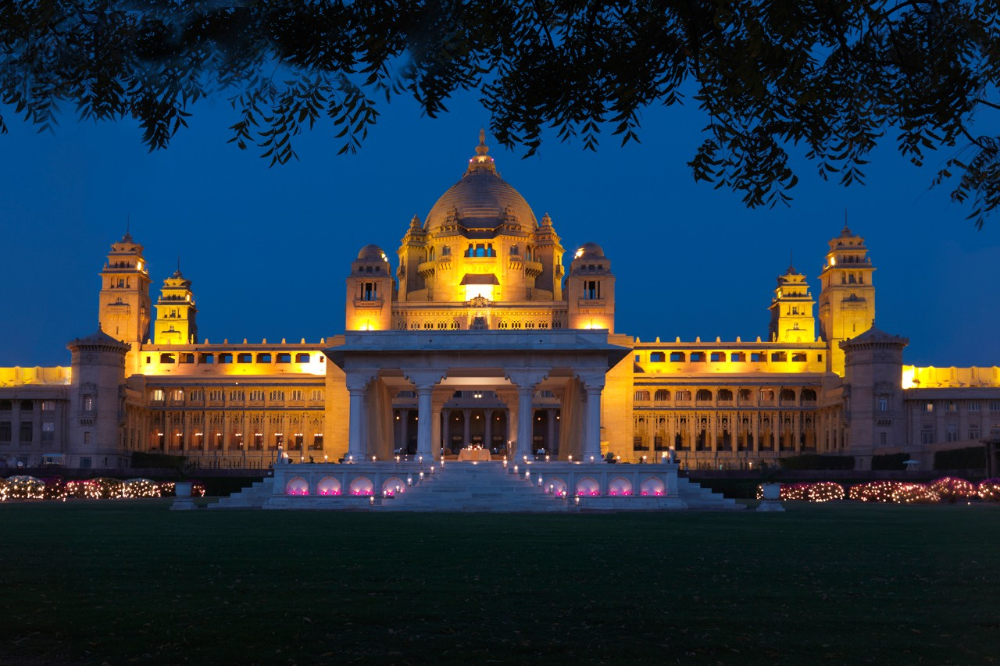
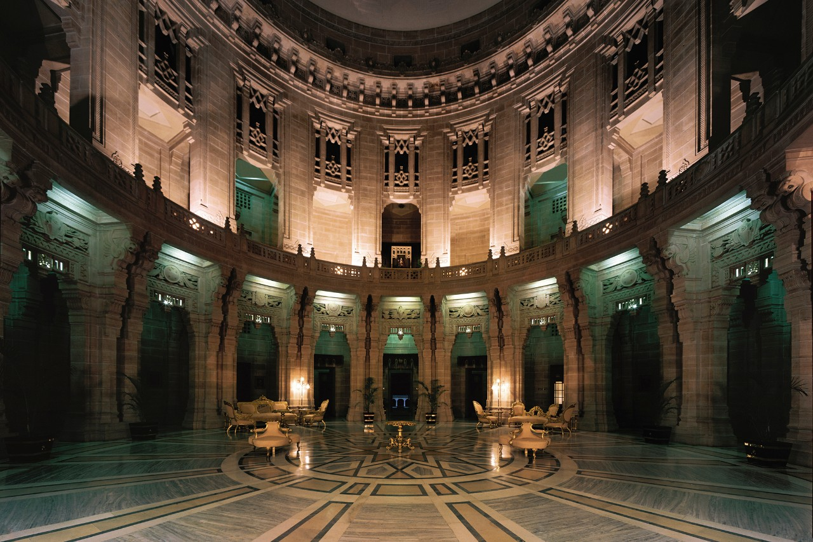
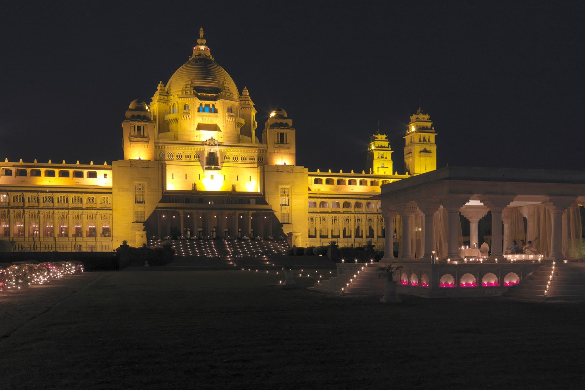
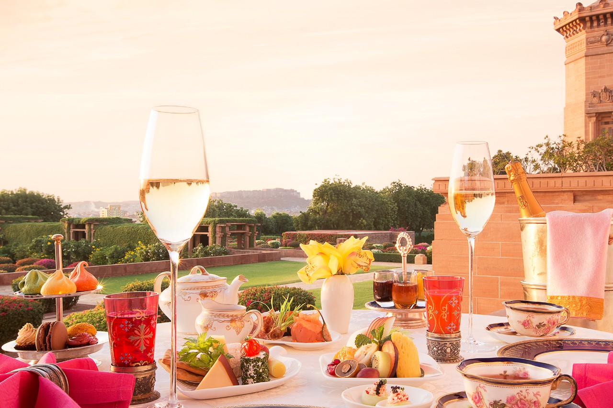
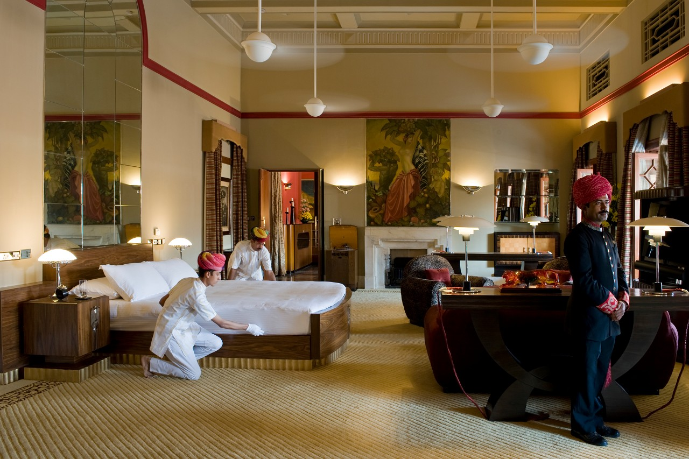
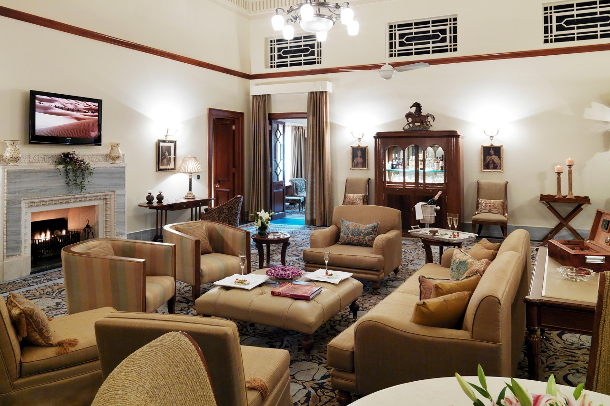
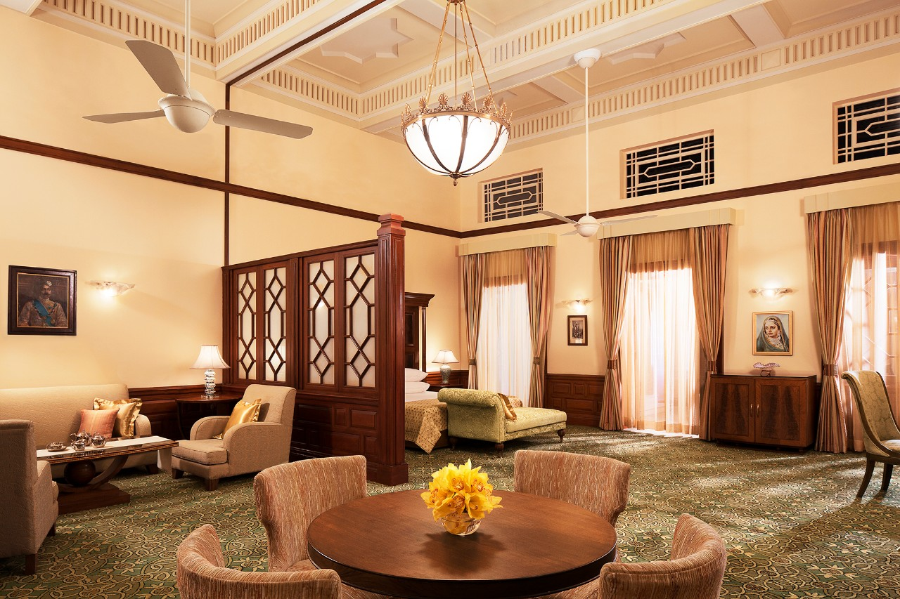
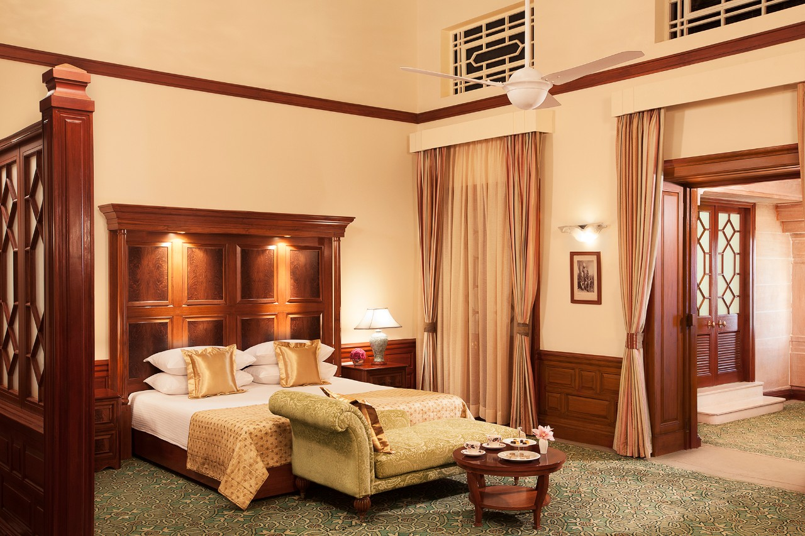
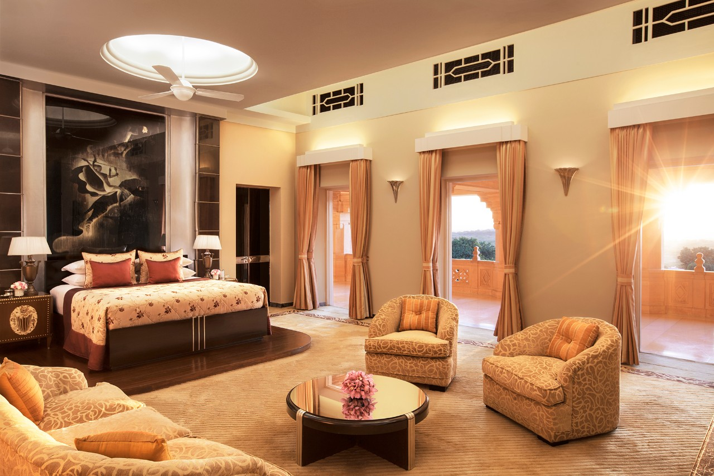

<div class="container project-view">
    
	<div class="row">
        <div class="col-md-8 project-images">
            
            
            
            
            
            
            
            
            
        </div>
        <div class="col-md-4">
            <div class="project-info">
                <h2>Umaid Bhavan</h2>

                <div class="details">
                    <div class="info-text">
                        <span class="title">Location</span>
                        <span class="val">Jodhpur, Rajasthan</span>
                    </div>

                    <div class="info-text">
                        <span class="title">Category</span>
                        <span class="val">Luxury Wedding</span>
                    </div>
                </div>

					Built between 1928 and 1943, Umaid Bhawan Palace is a magnificent piece of Rajasthan’s heritage, and a symbol of new Jodhpur. 
					Home of the erstwhile Jodhpur royal family and currently the world’s sixth-largest private residence, 
					the palace has one thing in common with the iconic Taj Mahal at Agra—the palm court marble used in its construction.   
					<br/><br/>
					Perched on Chittar Hill, the highest point in Jodhpur, Umaid Bhawan Palace inspires with exotic views of the historical Blue City, vast sand dunes, and intimidating Mehrangarh Fort. 
					<br/><br/>
					The palace is conveniently located 20 minutes from the airport, close to the main shopping areas, and the Balsamand and Kalyana lakes.   
					<br/><br/>
					The last of the great palaces of India, the property houses a family museum, as well as the resplendent Umaid Bhawan Palace. 
            </div>
        </div>
    </div>
</div>